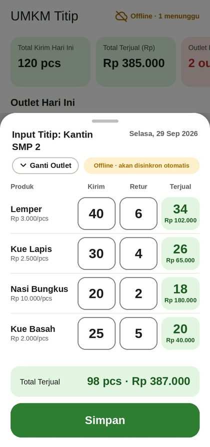
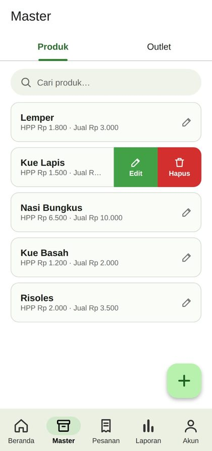
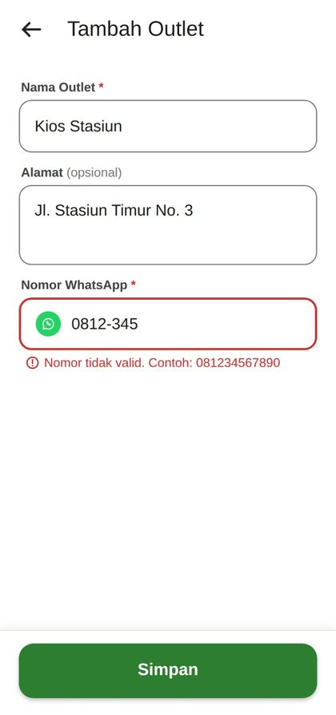
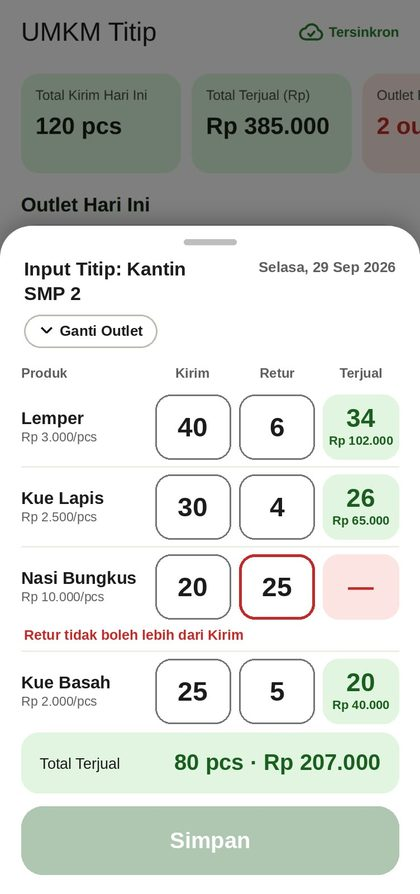

Catat kirim dan retur outlet secara akurat.
Biarkan UMKM Titip hitung omzet dan profit dengan cepat.
APK segera hadir

Produk makanan harian hanya tahan satu sampai dua hari. Begitu dititip ke warung, kantin, atau toko, barang yang tidak laku langsung jadi kerugian. UMKM Titip mencatat kirim dan retur tiap outlet, menghitung untung rugi otomatis, dan merapikan pesanan langsung dalam satu aplikasi.
Masukkan nama produk, HPP, dan harga jual default. Setelah itu terisi otomatis di setiap input.

Catat nama outlet, alamat, dan nomor WhatsApp. Nomor yang salah ditolak sebelum tersimpan.

Isi dua angka per produk. Terjual dan nilai rupiah muncul saat itu juga. Retur yang lebih besar dari kirim tidak bisa disimpan.

Tanpa internet pun input tetap tersimpan di ponsel dan disinkronkan otomatis saat sinyal kembali.
Kirim dan retur tiap produk dalam satu layar.
Terjual, nilai rupiah, dan tingkat keterjualan tanpa kalkulator.
Pemesan, jatuh tempo, status pesanan, dan status bayar.
Lihat outlet laris, standar, atau kurang. Filter tanggal dan ekspor ke Excel. (Contoh data)
Data tersimpan di ponsel lalu tersinkron saat sinyal kembali.
Berkas cadangan dikirim ke email akun tiap tengah malam bila ada perubahan data.
Notifikasi pukul 07.00 untuk pesanan jatuh tempo dan pukul 18.00 untuk retur yang belum diinput.
Satu ketuk membuka chat ke outlet atau pemesan, tanpa menyimpan kontak.
Data usaha Anda tidak tercampur dengan akun lain, jadi aman dipakai banyak UMKM sekaligus.
Unduh aplikasinya, daftar akun, lalu catat kirim dan retur outlet pertama Anda.
Unduh APKAPK segera hadir